VaticanoPerú11–16 nov
Vaticano confirma agenda del papa León XIV en Perú del 11 al 16 de noviembre
El Vaticano dio a conocer el programa oficial del viaje apostólico del papa León XIV al Perú, previsto del 11 al 16 de noviembre de 2026.
El Vaticano dio a conocer el programa oficial del viaje apostólico del papa León XIV al Perú, previsto del 11 al 16 de noviembre de 2026.
Quién se juntó con quién, y por cuánto. Toca un nombre subrayado para ver el resto de su red.
El Instituto Cultural Peruano Norteamericano (ICPNA) y Miami Dade College (MDC) formalizaron una alianza de cooperación interinstitucional orientada a desarrollar nuevas oportunidades de capacitación…
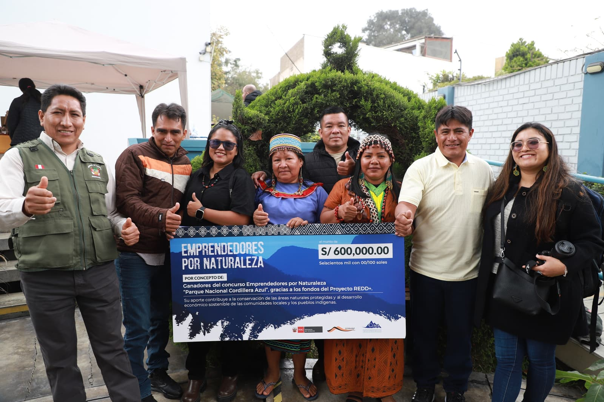
El Servicio Nacional de Áreas Naturales Protegidas por el Estado (Sernanp), organismo adscrito al Ministerio del Ambiente, anunció la ampliación del plazo de postulación del concurso “Emprendedores…
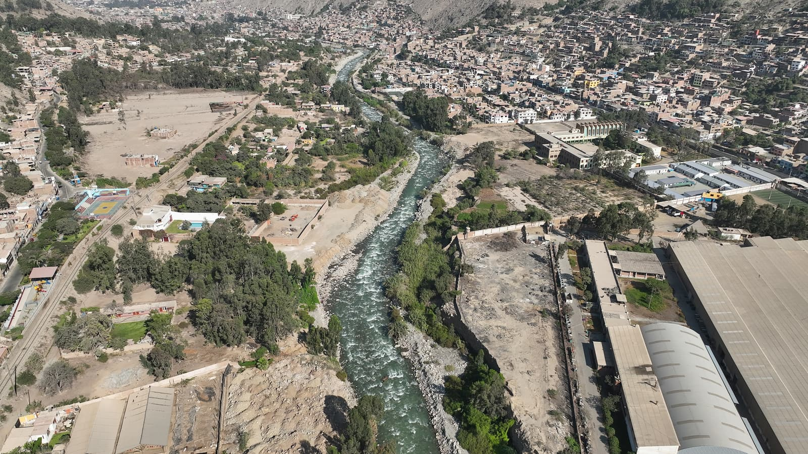
La Autoridad Nacional de Infraestructura (ANIN) amplió su cartera de intervención integral para el control de riesgos por movimientos de masa e inundaciones en la cuenca del río Rímac con la…
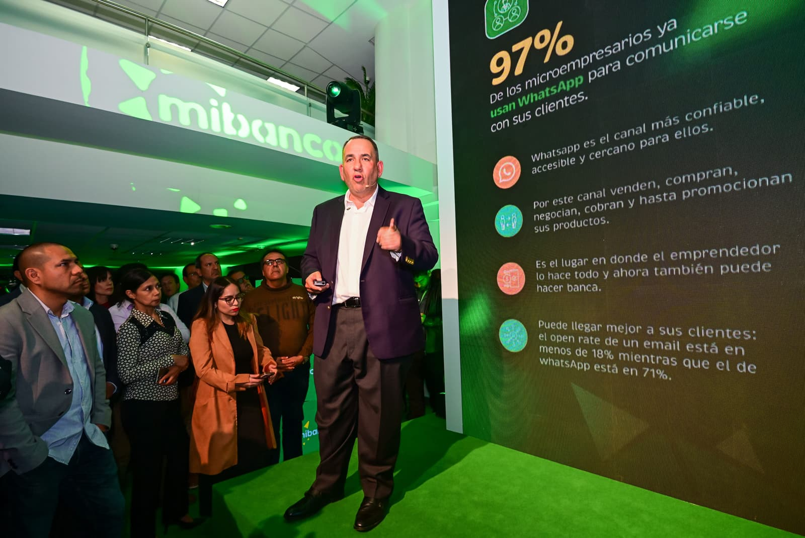
En su compromiso por fortalecer la inclusión financiera en el país, Mibanco presentó “Mibanco por WhatsApp”, una innovadora solución digital que permitirá a miles de microempresarios acceder a…
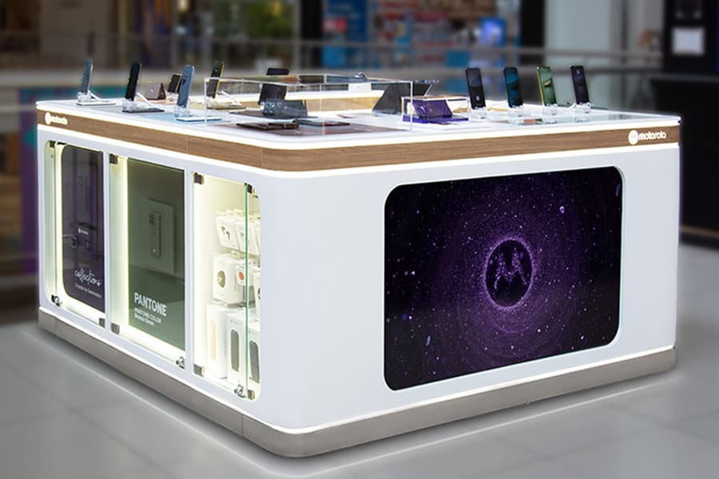
Motorola inauguró su primera tienda en Perú el viernes 18 de septiembre, en el tercer piso del centro comercial Mall del Sur, en Lima.
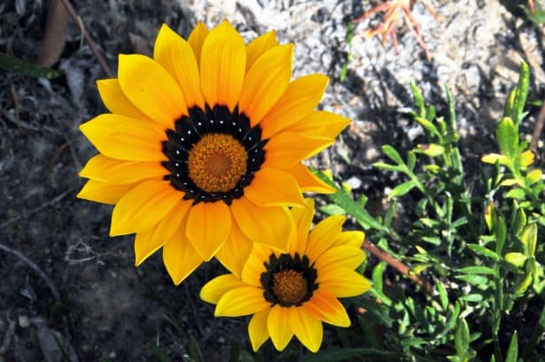
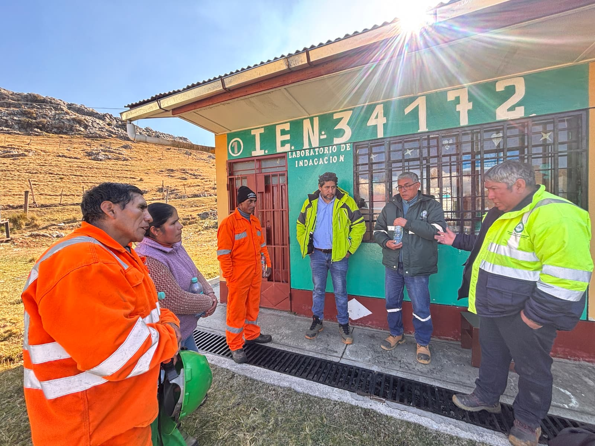
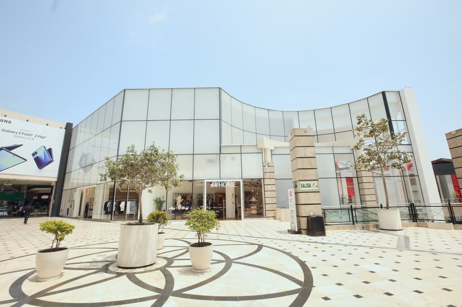
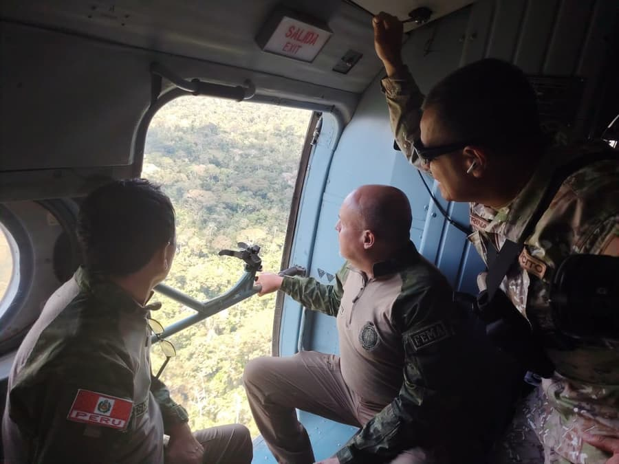
El Ministerio del Ambiente (Minam), a través del Servicio Nacional de Áreas Naturales Protegidas por el Estado (Sernanp), fortalece la vigilancia preventiva en el Parque Nacional del Manu mediante un…
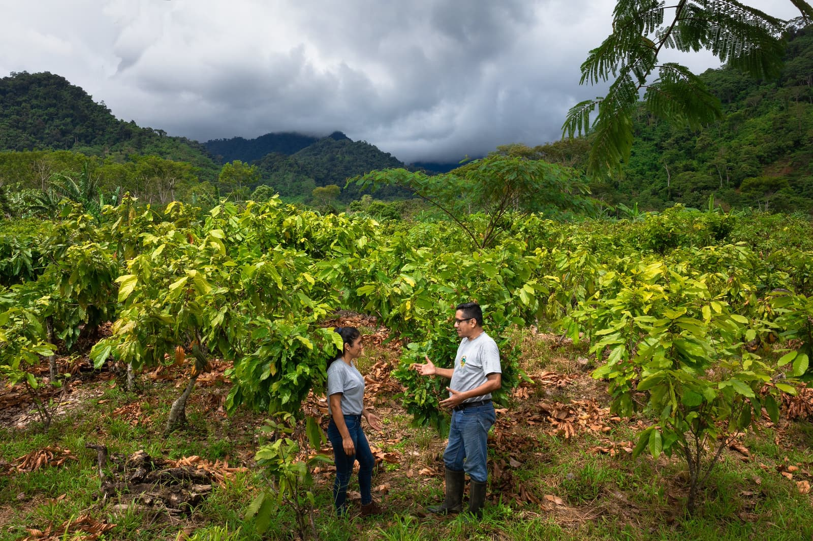
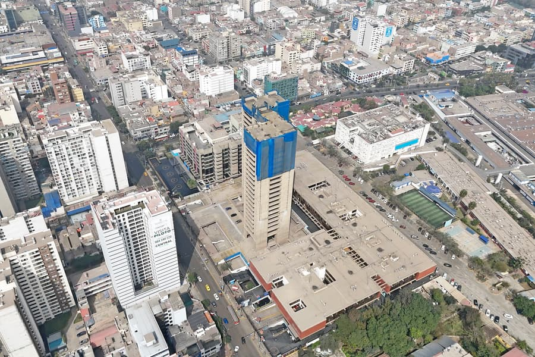
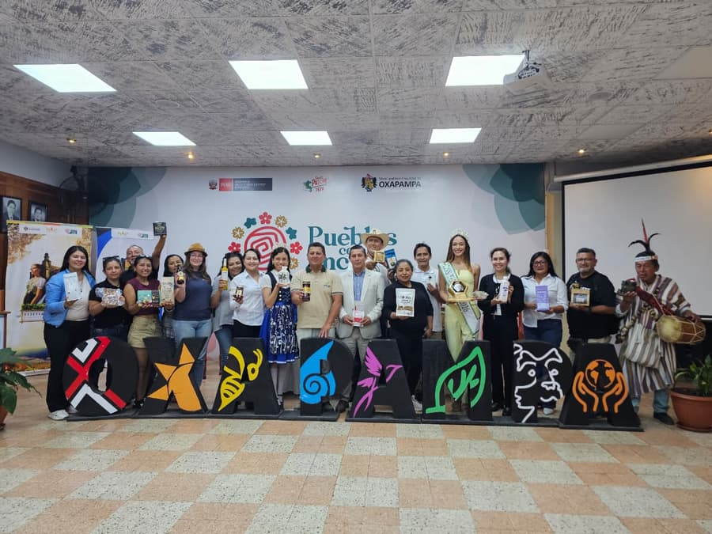
El presidente estadounidense, Donald Trump, confirmó este sábado que Estados Unidos ha llevado a cabo «con éxito un ataque a gran escala contra Venezuela» y afirmó que «su líder, el presidente Nicolás…
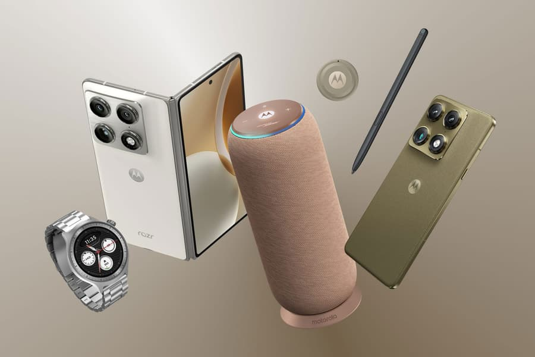
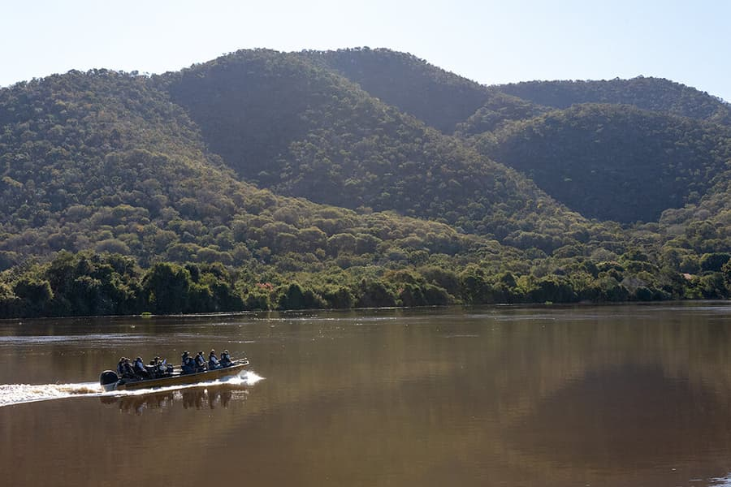
Sebastian Arriada
Chief Information Officer en Globant
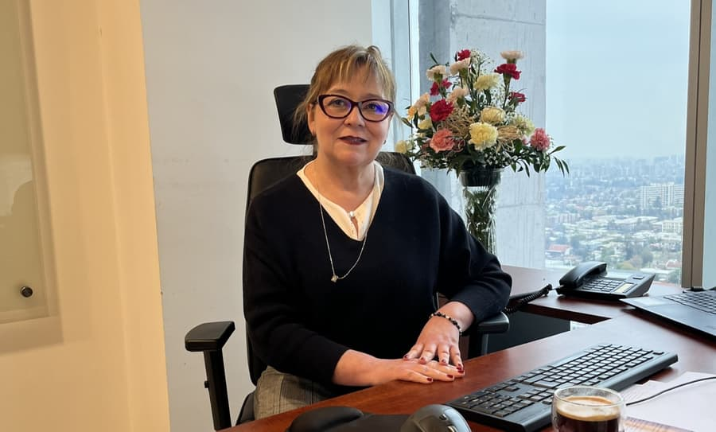
Claudia Valdés Muñoz
gerente general de BBSC
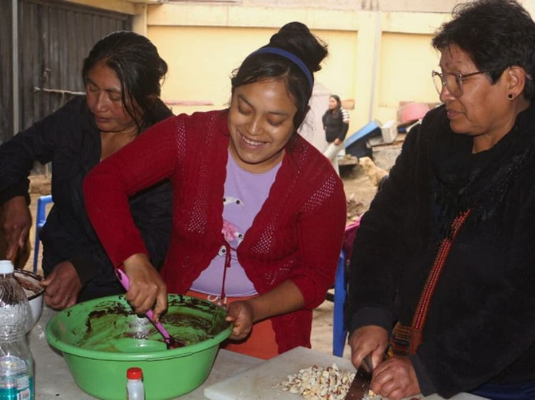
Jimena Chávez Fuentes
Directora País de DVV International
El boletín de Networking Noticias: los vínculos, las cifras y las voces del día, antes de las 8.
Listo. Te llegará mañana a primera hora.